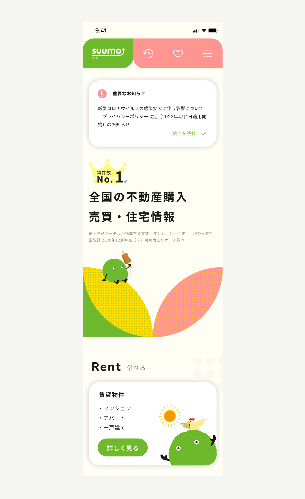
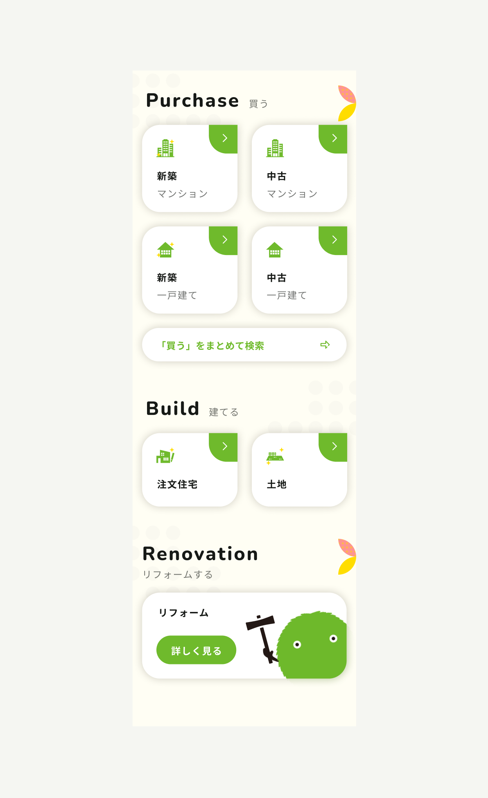
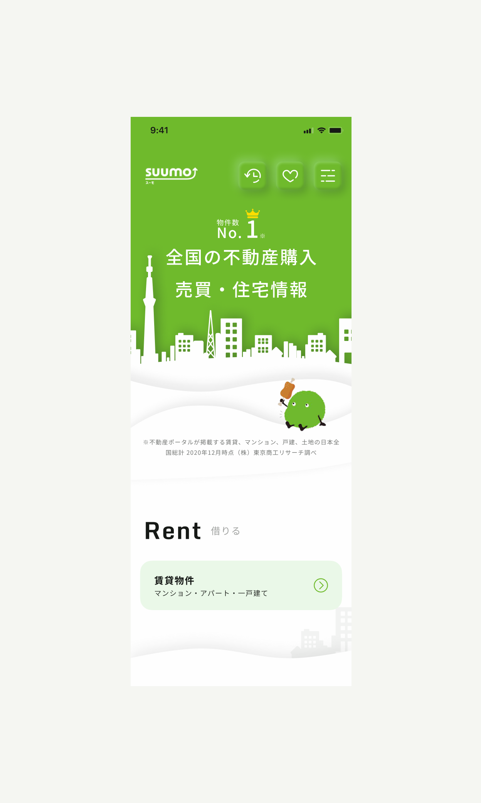
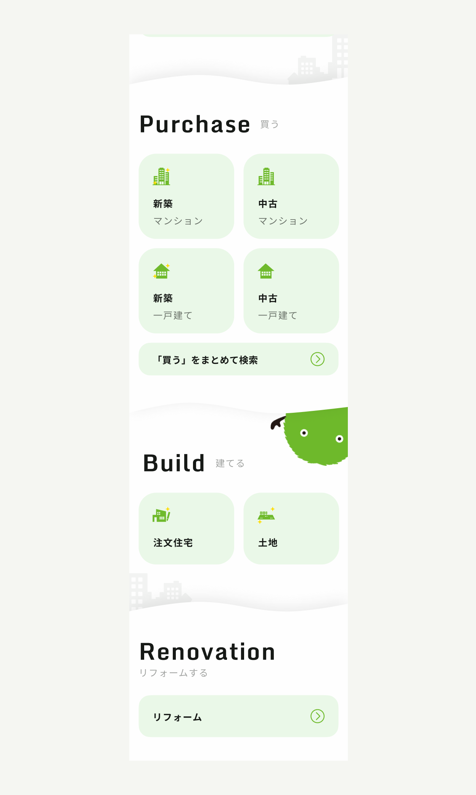

Work Detail
SUUMO：スマホサイト
SUUMOからのスマホデザインリニューアルの依頼があり、2パターン提案デザインを作成しました。
2012年以降SUUMOスマホデザインのアップデートが行われておらず、ビジュアルデザインが他社競合よりも劣っているためリニューアルしたいということでした。
担当：
期間：
ツール：
UIデザイン
2022年4月末 〜 5月中旬
Figma
Design Problem
Problem
古いデザインのサイトであることの問題は2点あると思いました。
IOS/AndroidのUIや新しいアプリには、ユーザーにとって視認性の高いデザインや思わずクリックしたくなるようなデザインが使用されています。普段からそのようなデザインを見ているユーザーにとって、古いデザインは見慣れたものではないため、視認性の悪さを感じてしまいます。
デザインの視認性の悪さは、アプリの使いやすさに強く影響し、ユーザーのページ離脱につながります。これによって新規ユーザーや既存ユーザーが別のサービスサイトへと乗り換える可能性があります。
例えば、「楽天」を使うか「Amazon」を使用するかなど。
新規ユーザーが、同系統のサービスを見比べる際に慎重に調べて使用するサービスを選ぶ可能性もあれば、サイトのデザインが新しいからという理由でサービスを選ぶ可能性もあります。
後者の場合、ユーザーはWebサイトの「見た目」が古いから選ばなかったのではなく、Webサイトの「見た目」が古いと掲載されている情報も古いと認識する可能性が高いためです。そのため、自然と新しい情報のありそうな「見た目」の新しい方を選びます。（不動産屋さんの例：駅前の古い不動産を見るといつの情報の物件がのってるのだろうか？と思うが、外観の綺麗な不動産屋さんを見ると新しい物件をたくさん紹介しているのではと思う）
このようにデザインの更新頻度が低いと会社自体が最新の情報を扱っていないと感じられる可能性があります。 よって、古いデザインのままでは、新規ユーザーが競合他社に流れてしまう可能性があると言えます。
①視認性の悪さをユーザーが感じてしまう可能性が高い。
スマートフォンで物件を探すユーザーは、普段からスマートフォンを使用してリサーチをしていることが多いため、IOS/AndroidのUIや新しいアプリに触れる機会が高い可能性があります。IOS/AndroidのUIや新しいアプリには、ユーザーにとって視認性の高いデザインや思わずクリックしたくなるようなデザインが使用されています。普段からそのようなデザインを見ているユーザーにとって、古いデザインは見慣れたものではないため、視認性の悪さを感じてしまいます。
デザインの視認性の悪さは、アプリの使いやすさに強く影響し、ユーザーのページ離脱につながります。これによって新規ユーザーや既存ユーザーが別のサービスサイトへと乗り換える可能性があります。
②新規ユーザーが競合他社に流れてしまう可能性がある。
新規ユーザーは、同系統のサービスをさまざまな観点で見比べてどの特定のサービスを使用するかを決めます。例えば、「楽天」を使うか「Amazon」を使用するかなど。
新規ユーザーが、同系統のサービスを見比べる際に慎重に調べて使用するサービスを選ぶ可能性もあれば、サイトのデザインが新しいからという理由でサービスを選ぶ可能性もあります。
後者の場合、ユーザーはWebサイトの「見た目」が古いから選ばなかったのではなく、Webサイトの「見た目」が古いと掲載されている情報も古いと認識する可能性が高いためです。そのため、自然と新しい情報のありそうな「見た目」の新しい方を選びます。（不動産屋さんの例：駅前の古い不動産を見るといつの情報の物件がのってるのだろうか？と思うが、外観の綺麗な不動産屋さんを見ると新しい物件をたくさん紹介しているのではと思う）
このようにデザインの更新頻度が低いと会社自体が最新の情報を扱っていないと感じられる可能性があります。 よって、古いデザインのままでは、新規ユーザーが競合他社に流れてしまう可能性があると言えます。
Design Solution その①
Solution①
図形やカラフルな色使いで「楽しさ」や「親やすさ」を第一にデザインしました。
また、ボタンの中にSUUMOくんをいれ、ユーザーが「優しさ」「親やすさ」を感じられるようにしました。
①使用している幾何学の図形
丸をメインとした図形を取り入れることで「優しい」「親やすい」雰囲気をユーザーが感じられるようにしました。また、図形の中で色を切り替えたり、図形の中にドットの模様を入れることで、「楽しさ」「遊び心」を表現しました。
②ピンクと黄色
SUUMOのメインカラーである緑色と一緒に「ピンク」や「黄色」など彩度の高い明るい色を使用することで、ユーザーが「信頼感」を感じられるような明るい印象のあるトップページにしました。
③ボタンのデザイン
近年のデザイントレンドを取り入れるため、各ボタンをカードのようにしました。また、角丸を強くし、影を深く落とすことでユーザーが思わずタップしたくなるようなUIを目指しました。また、ボタンの中にSUUMOくんをいれ、ユーザーが「優しさ」「親やすさ」を感じられるようにしました。


Design Solution その②
Solution②
「シンプルさ」を残しつつも「遊び心」を少し加えたデザインにしました。
①立体感のあるファーストビュー
ファーストビューでは、切り絵のような雰囲気の建物のイラストを用いています。これは、ページに来たユーザーが賃貸のサイトであることが直感的にわかるようにしています。また、アクセスしている位置によってイラストが変わるようにしようと考えています。これによって、ユーザーに各土地の雰囲気を感じてもらいます。また、立体感をよりユーザーに味わってもらえるようにニューモフィズムデザイン（凸凹したボタン）をメニューボタンにつかっています。
②ブランドカラーである「明るい緑色」とモノトーンな配色
ブランドカラーである「明るい緑色」と、彩度の薄い白色に近い緑色と白色を使用することで、シンプルな印象を作っています。白を基調とし、シンプルで清潔感のある印象にすることで、情報に対しての「透明性」やサービスとしての「信頼感」をユーザーが感じられるようにしています。
また、ファーストビューではブランドカラーを大胆に使うことでSUUMOのサイトであるということが直感的にわかるようになっています。
③フラットなボタンデザイン
デザインとしての統一感を出すために、サイト全体を通して立体感を感じられるようにセクションごとに波がかった背景をいれています。ボタンはあえてフラットにすることで視認性を高くし、「シンプルさ」をユーザーが感じられるようにしています。

